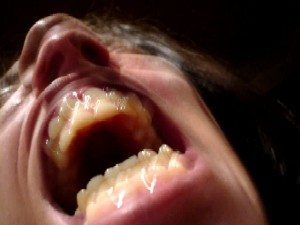

Narrativa

Despair, por catalina77
l estruendo del portazo final fue una pregunta que no pensaba dejar sin respuesta. Así que la seguí como pude, escaleras abajo, aturdido, con la sangre golpeando a un ritmo cada vez más intenso.
No podía creer que se fuera así. Que de aquella pequeñez hiciera un mundo, y que en ese mundo, nuevo, solo hubiera espacio para ella.
Los gritos eran una constante en nuestra historia. Siempre esta forma de llevarnos al extremo. Siempre la amenaza del final. El riesgo. La adrenalina. Y siempre el reencuentro. La vuelta. Los buenos tiempos que duraban hasta la próxima tormenta. Volvería. No tenía que seguirla. Sabía de sobra que volvería, y, sin embargo… casi pierdo el equilibrio al recordar, como al descuido, un destello extraño que había notado en sus pupilas. Un gesto que no le conocía en el rostro, un temblor diferente de las manos. ¿Si esta vez es cierto? ¿Si no vuelve?
Temí que no hubiera futuros portazos ni nuevas peleas, así que corrí más rápido. Tan rápido como pude, medio mareado por mi propia madeja de pensamientos. Por el miedo a perderla para siempre si alcanzaba la calle. Por la incredulidad ante su reacción desmedida frente a aquel detalle. Por el orgullo de no quedarme con la palabra en la boca. Por la necesidad de descifrar aquel gesto nuevo entre las cejas.
Faltarían un par de pisos. No tenía cabeza para llevar la cuenta. Sólo era la agitación. Y los pasos. Los de ella repetidos al infinito por el eco. Los míos torpes, sin conciencia.
Recuerdo el olor a humedad. La sangre bombeando a toda marcha. Los pisos por delante. La oscuridad de los pasillos idénticos, repetidos como espejos. El agotamiento del impulso inicial.
Y los pasos.
Las rodillas temblando. La inercia arrastrándome y yo queriendo ir más rápido. Más rápido. Más rápido, Esteban, antes de que llegue a la vereda.
Steps, por Tauri Tuubel
Y los pasos.
El sudor helado. Mi intento de bajar de dos en dos los escalones porque me estoy acercando al fin, y el eco me devuelve una proximidad cada vez más cercana.
Ya casi llego, y la pregunta de siempre ¿por qué nos hacemos esto, si ella sabe perfectamente que…
Un golpe seco que no acaba, que se continúa en un rodar por la escalera.
Un grito que no dice nada más que el dolor que le sucede y que calla de pronto para dejar este silencio.
Este silencio mudo en el que vivo desde entonces.